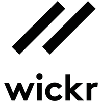

Hangi mesajlaşma uygulaması daha güvenli?
Son yıllarda mobile mesajlaşma uygulamaları büyük yükselişe geçti. Ancak milyonlarca kişinin kullandığı WhatsApp ve Facebook Messenger gibi uygulamaların yeterince güvenilir olmadığı biliniyor. Özellikle WhatsApp’ın Facebook’a satılmasından sonra, WhatsApp’ın da sorgulanmaya başladığını görüyoruz. Çünkü mesajlarınız artık Facebook sunucularında barındırılıyor. Peki, bu uygulamalar yerine hangi uygulamaları kullanmamız gerekiyor? Bu yazımızda kullanabileceğiniz en güvenilir mesajlaşma uygulamalarını sıralayacağız.
Telegram
WhatsApp‘a rakip olarak nitelendirilen ve rus geliştiriciler tarafından oluşturulan Telegram, güvenli mesajlaşma uygulamaları arasında en iyi seçenek olarak dikkat çekiyor.
Telegram‘da yer alan gizli sohbet özelliği ile kullanıcılar arasındaki sohbet şifreleniyor ve gönderilen mesajları, sadece mesajı gönderenler ve alanlar görebiliyor. Bu sayede güvenlik sağlanmış oluyor. Telegram ile, 200 kişiye kadar grup sohbeti oluşturabilir, 1 GB kadar resim gönderebilir, sesli mesajlaşma gerçekleştirebilirsiniz.
Omlet
Kullanışlı arayüze sahip ve güvenliğinden şüphe duymanın zor olduğu Omlet suygulamasıda en az Telegram kadar başarılı şekilde güvenliği sağlamaya çalışıyor. Stanford Üniversitesi Bilgisayar Bilimleri Bölümü tarafından geliştirilen güvenlik özellikleri ile donatılan Omlet başarılı arayüzü ile çok başarılı bir kullanım sunuyor.
Omlet ile gönderdiğiniz mesajlar sizin online depolama alanınızda saklanır bu şekilde mesajlarınız güvende olur. Ayrıca gönderdiğiniz mesajların şifrelenmesiyle ikinci bir önlem de alınmış olur. Omlet ile mesaj, fotoğraf ve sesli mesaj, GIF desteğiyle hareketli resim gönderebilirsiniz. Ayrıca yaratıcı sticker ve oyunlar ile sıkılmadan ve güvenle mesajlaşabilirsiniz.
TicToc

Güvenli uygulamalar arasında adını pek fazla duymadığımız TicToc uygulaması da başarılı olan güvenli mesajlaşma uygulamalarından biri. TicToc ile mesajlarınız sunucular da saklanmaz ve gönderim sonrası silinir. Bu şekilde güvenliğiniz gözle görülür şekilde artar. Ayrıca gönderim süresince de sunucular şifrelendiği için mesaljlarınızın güvenle gönderilmesini sağlar.
TicToc uygulaması ile grup sohbetleri yapabilir, sticker, resim ve sesli mesaj gönderebilir. Ayrıca TicToc kullanmayan kişilerle de mesajlaşabilir ve arama yapabilirsiniz.
Sicher
Sicher‘da Telegram benzeri şekilde karşılıklı gönderilen mesajları şifreliyor ve aynı zamanda gönderdiğiniz mesajları saklamıyor. Bu şekilde gönderdiğiniz mesajlar güvende kalıyor.Sicher uygulaması ile grup sohbeti oluşturabilir, anonim mesaj, döküman, resim, sesli mesajlar ve dökümanlar(pdf, doc, ppt vb.) gönderebilirsiniz.
Ayrıca Sicher ek olarak kullanım istatistikleri gibi verileri dahi kaydetmez. Yani hiçbir şekilde sizler hakkında bilgi toplamaz.
Wickr
Wickr uygulamasının güvenlik yöntemleri bilinmiyor. Geliştirici ekibi uygulamanın farklı yerlerdeki ekipler tarafından yürütülen çalışmalar ile en güvenli mesajlaşma uygulaması olduğunu belirtiyor.
Wickr uygulamasıyla resim, sticker, emotion, video göndrebilirsiniz. Ayrıca grup oluşturarak dilediğiniz kişiler arasında ortak bir sohbet gerçekleştirebilirsiniz.